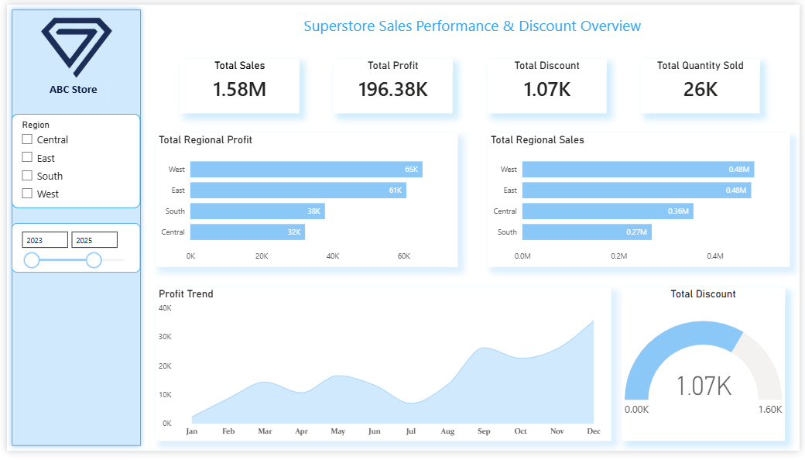
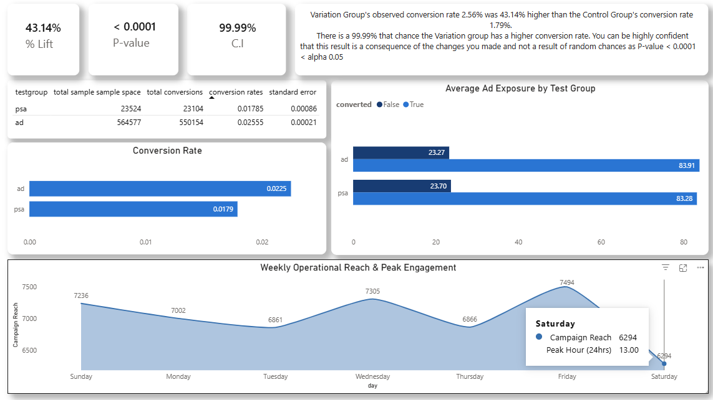

Portfolio
All Projects
Data analytics case studies and web development work. The analytics projects are independent practice on public Kaggle datasets, not client or employer work.
Data Analytics
Projects

Retail Analysis
Superstore Sales Performance & Regional Profitability Analysis
Four years of transactional data, mapped for growth trends, discount impact, and regional profitability.
Read the analysis →
Marketing Experimentation
Marketing Campaign A/B Test Evaluation (SQL Project)
A Chi-Square test across 588,101 users proving the ad campaign drove a real, statistically significant lift.
Read the analysis →
Customer Analytics
Customer Demographics & Churn Analysis
Tracing customer cohorts and behaviors to understand what drives churn and where to invest in retention.
Early-stage write-up
HR Analytics
Employee Retention & Attrition Analysis
Identifying which roles, tenure ranges, and management changes correlate with employee turnover.
Early-stage write-up
Web Design & Development